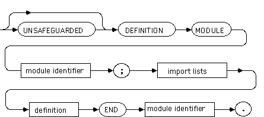
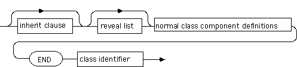

The term Object Oriented Modula-2 refers to a set of extensions to the base language that allow for programmers to create classes and instantiate objects of those classes. Material in this section is adapted from ISO/IEC 10514-3, the official standard for the object extensions to Modula-2.
The following are added to the list of keywords for the base language.
AS ABSTRACT CLASS GUARD INHERIT OVERRIDE READONLY REVEAL TRACED UNSAFEGUARDED
The following are added to the list of pervasive identifiers for the base language.
CREATE DESTROY EMPTY ISMEMBER SELF
program module (see A.2.2.1.2)
definition module (see A.2.2.1.3)
implementation module (see A.2.2.1.4)
definition (see A.2.2.2.2)
declaration (see A.2.2.2.3)
qualified identifier (see A.2.2.2.1)
variable designator (see A.2.2.6)
value designator (see A.2.2.7.2)
statement (see A.2.2.5)
class definition
untraced class definition
traced class definition
normal class definition
normal class header
normal class definition body
abstract class definition
abstract class header
abstract class definition body
class identifier
normal class component definitions
normal component definition
abstract class component definitions
abstract component definition
class variable declaration
normal method definition
overriding method definition
abstract method definition
class declaration
untraced class declaration
normal class declaration
normal class header
normal class declaration body
abstract class declaration
abstract class header
abstract class declaration body
class body
normal class component declarations
normal component declaration
abstract class component declarations
abstract component declaration
normal method declarations
normal method declaration
overriding method declaration
abstract method declarations
traced class declaration
normal traced class declaration
normal traced class header
normal traced class declaration body
abstract traced class declaration

abstract traced class header
abstract traced class declaration body
traced class body
reveal list
revealed component list
revealed component
class variable identifier
inherit clause
class type identifier
object selected designator
object variable designator
object selected value
object value designator
entity identifier
guard statement
guard selector
guarded list
guarded statement sequence
guarded class type
object denoter
program module =
["UNSAFEGUARDED"]"MODULE",module identifier, [protection], semicolon,
import lists, module block, module identifier, period ;
definition module =
["UNSAFEGUARDED"]"DEFINITION", "MODULE", module identifier, semicolon,
import lists, definitions, "END", module identifier, period ;
implementation module =
["UNSAFEGUARDED"]"IMPLEMENTATION", "MODULE", module identifier,
[protection], semicolon, import lists, module block,
module identifier, period ;
definition =
"CONST", {constant declaration, semicolon} |
"TYPE", {type definition, semicolon} |
"VAR", {variable declaration, semicolon} |
procedure heading, semicolon ;|
class definition, semicolon ;
declaration =
"CONST", {constant declaration, semicolon} |
"TYPE", {type declaration, semicolon} |
"VAR", {variable declaration, semicolon} |
procedure declaration, semicolon |
class declaration, semicolon |
local module declaration, semicolon ;
qualified identifier =
{module identifier, period}, [class identifier, period],
identifier ;
variable designator =
entire designator | indexed designator |
selected designator | dereferenced designator |
object selected designator;
value designator =
entire value | indexed value | selected value |
dereferenced value | object selected value;
statement =
empty statement | assignment statement | procedure call |
return statement |retry statement | with statement |
if statement | case statement |while statement |
repeat statement | loop statement |exit statement |
for statement | guard statement;
The concrete syntax in this section is taken from ISO/IEC IS 10514-3, the international standard for the object oriented extensions to Modula-2.
class definition =
( traced class definition | untraced class definition ) ;
untraced class definition =
( normal class definition | abstract class definition ) ;
traced class definition =
"TRACED", ( normal class definition | abstract class definition ) ;
normal class definition =
normal class header, ( normal class definition body | "FORWARD" ) ;
normal class header =
"CLASS", class identifier, semicolon ;
normal class definition body =
[ inherit clause ], [ reveal list ],
normal class component definitions, "END", class identifier ;
abstract class definition =
abstract class header, ( abstract class definition body | "FORWARD" ) ;
abstract class header=
"ABSTRACT", "CLASS", class identifier, semicolon ;
abstract class definition body =
[ inherit clause ], [ reveal list ],
abstract class component definitions, "END", class identifier ;
class identifier = identifier ;
normal class component definitions = { normal component definition } ;
normal component definition =
"CONST", { constant declaration, semicolon } |
"TYPE", { type definition, semicolon } |
"VAR", { class variable declaration, semicolon } |
(normal method definition | overriding method definition),
semicolon ;
abstract class component definitions =
{abstract component definition } ;
abstract component definition =
"CONST", { constant declaration, semicolon } |
"TYPE", { type definition, semicolon } |
"VAR", { class variable declaration, semicolon } |
(normal method definition | abstract method definition |
overriding method definition), semicolon ;
class variable declaration = identifier list, colon, type denoter ;
normal method definition = procedure heading ;
overriding method definition = "OVERRIDE", procedure heading ;
abstract method definition = "ABSTRACT", procedure heading ;
class declaration =
( traced class declaration | untraced class declaration ) ;
untraced class declaration =
( normal class declaration | abstract class declaration ) ;
normal class declaration =
normal class header, ( normal class declaration body | "FORWARD" ) ;
normal class header =
"CLASS", class identifier, semicolon ;
normal class declaration body =
[ inherit clause ], [ reveal list ],
normal class component declarations,
[ class body ], "END", class identifier ;
abstract class declaration =
abstract class header,
( abstract class declaration body | "FORWARD" ) ;
abstract class header =
"ABSTRACT", "CLASS", class identifier, semicolon ;
abstract class declaration body =
[ inherit clause ], [ reveal list ],
abstract class component declarations,
[ class body ], "END", class identifier ;
class body = module body;
normal class component declarations =
{ normal component declaration } ;
normal component declaration =
"CONST", { constant declaration, semicolon } |
"TYPE", { type declaration, semicolon } |
"VAR", { class variable declaration, semicolon } |
normal method declarations , semicolon ;
abstract class component declarations =
{abstract component declaration } ;
abstract component declaration =
"CONST", { constant declaration, semicolon } |
"TYPE", { type declaration, semicolon } |
"VAR", { class variable declaration, semicolon } |
abstract method declarations , semicolon ;
normal method declarations =
normal method declaration | overriding method declaration ;
normal method declaration = procedure declaration ;
overriding method declaration = "OVERRIDE", procedure declaration ;
abstract method declarations =
normal method declaration | abstract method definition |
overriding method declaration ;
traced class declaration =
( normal traced class declaration | abstract traced class declaration ) ;
normal traced class declaration =
normal traced class header,
( normal traced class declaration body | "FORWARD" ) ;
normal traced class header =
"TRACED", "CLASS", class identifier, semicolon ;
normal traced class declaration body =
[ inherit clause ], [ reveal list ],
normal class component declarations,
[ traced class body ], "END", class identifier ;
abstract traced class declaration =
abstract traced class header,
( abstract traced class declaration body | "FORWARD" ) ;
abstract traced class header=
"TRACED", "ABSTRACT", "CLASS", class identifier, semicolon ;
abstract traced class declaration body =
[ inherit clause ], [ reveal list ],
abstract class component declarations,
[ traced class body ], "END", class identifier ;
traced class body = "BEGIN", block body ;
revealed component list =
revealed component, { comma, revealed component } ;
revealed component = identifier | "READONLY" class variable identifier ;
class variable identifier = identifier ;
inherit clause = "INHERIT", class type identifier, semicolon ; class type identifier = type identifier ;
object selected designator = object variable designator, period, [ class identifier, period ], class variable identifier ; object variable designator = variable designator ; object selected value = object value designator, period, [ class identifier, period ], entity identifier ; object value designator = value designator ; entity identifier = identifier ;
guard statement =
"GUARD", guard selector, "AS", guarded list,
["ELSE" statement sequence],
"END" ;
guard selector = expression ;
guarded list =
guarded statement sequence {vertical bar, guarded statement sequence} ;
guarded statement sequence =
[[object denoter], colon, guarded class type, "DO", statement sequence] ;
guarded class type = class type identifier ;
object denoter = identifier ;
Unless a program module or an implementation module is tagged as unsafeguarded in its header, it shall not contain:
Unless a definition module is tagged as unsafeguarded in its header, it shall not contain:
It shall be an error to declare a pointer type or a variable of a pointer type with a bound type that is or contains a record with a varient of a traced class type. It shall be an error to declare a type or a variable that is or contains a record with a varient of a traced class type.
OOM-2 extensions to the base language define four new exceptions. Detection of the first three is mandatory, but detection of the last one is optional. They are:
1. emptyException
raised whenever an attempt is made to access an object via an empty reference
2. abstractException
raised whenever an attempt is made to call an abstract method
3. guardException
raised if there is no match on the list of selections (possibly due to an empty reference) and no ELSE
4. immutableException
an implementation may choose to raise this if there is an attempt to change an immutable entity.
The module COROUTINES in the base standard has one procedure added to provide support for OOM-2. It is
PROCEDURE DISPOSECOROUTINE (VAR cr: COROUTINE); (* Declare that the coroutine identified by cr has reached the end of its lifetime. *)
DEFINITION MODULE M2OOEXCEPTION;
(* Provides facilities for identifying exceptions of the extended language *)
TYPE
M2OOExceptions =
(emptyException, abstractException, immutableException, guardException);
PROCEDURE M2OOException (): M2OOExceptions;
(* If the current coroutine is in the exceptional execution state because
of the raising of an exception of the language extensions, returns the
corresponding enumeration value, and otherwise raises an exception. *)
PROCEDURE IsM2OOException (): BOOLEAN;
(* If the current coroutine is in the exceptional execution state because
of the raising of an exception of the language extensions, returns
TRUE, and otherwise returns FALSE. *)
END M2OOEXCEPTION.
DEFINITION MODULE GARBAGECOLLECTION;
(* Provides facilities for controlling the garbage collector. *)
PROCEDURE IsCollectionEnabled (): BOOLEAN;
(* If garbage collection is enabled then returns TRUE and otherwise returns FALSE. *)
PROCEDURE CollectionEnable (on: BOOLEAN);
(* If on is TRUE then enable garbage collection; otherwise if on is FALSE and garbage
collection can be disabled then disable garbage collection. *)
PROCEDURE ForceCollection;
(* If garbage collection can be forced then force it else do nothing. *)
END GARBAGECOLLECTION.